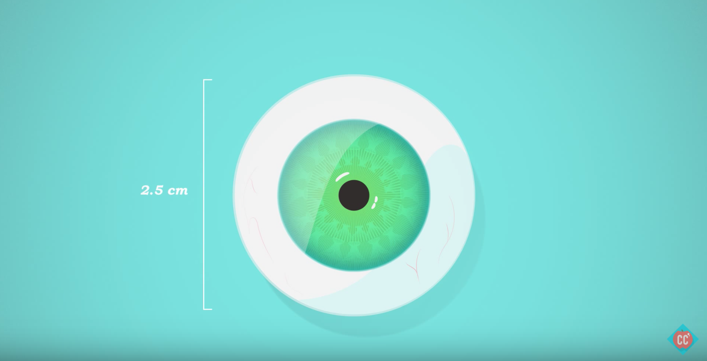
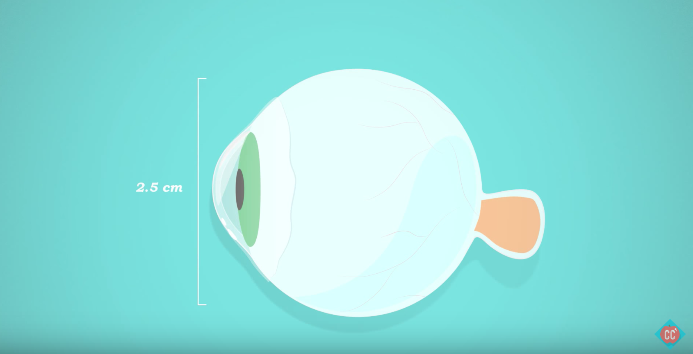

Anatomy
Three Layers Of The Eye
“Human vision is fallible, but those mistakes that it makes can help us understand that wonderfully complex system”
The Outermost Fibrous Layer

Made of connective tissue called Sclera (the white part of your eye)

The transparent part of your eye is the Cornea. The Cornea is like the window that lets light into the eye